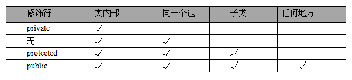
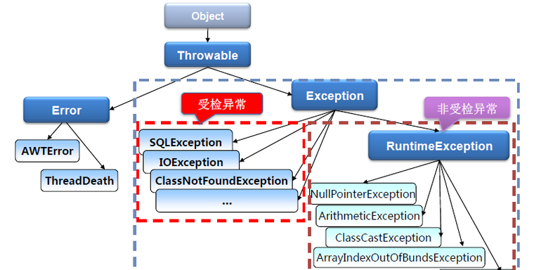

数组
按一定顺序排列的同类型数据的集合称为数组，引用类型
数组常见算法
1 | public class Array { |
java.util.Arrays
String toString(Object[] arr)将数组转换成一个字符串，括在方括号（“[]”）中，相邻元素用字符 ", "（逗号加空格）分隔
void sort(Object[] a)根据元素的自然顺序对数组按升序进行排序，数组中的所有元素都必须实现
Comparable接口。对于原始数据类型，使用所谓双轴快速排序（Dual-Pivot QuickSort），对于对象数据类型，使用TimSort
void sort(T[] a, Comparator<? super T> c)根据指定比较器产生的顺序对数组进行排序
void parallelSort(Object[] a)以并发的方式对数组元素进行排序
void setAll(T[] array, IntFunction<T> generator)使用提供的函数计算每一个元素的值，对数组中的所有元素进行设置
void parallelSetAll(T[] array, IntFunction<T> generator)以并发方式，使用提供的函数计算每一个元素的值，对数组中的所有元素进行设置
type binarySearch(Object[] a, type key)使用二分法査询 key 元素值在数组中出现的索引，如果数组不包含 key 元素值，则返回
-(low + 1)（调用该方法时要求数组中元素已经按升序排列）
boolean equals(Object[] a, Object[] a2)如果 a 数组和 a2 数组长度相等，且 a 数组和 a2 数组的数组元素也都相同，该方法将返回
true
Object[] copyOf(Object[] original, int newLength)复制 original 数组，截取或用 0（数值类型）、false（布尔类型）或者 null（引用类型）填充，以使新数组的长度为 newLength
List<T> asList(T… a)把引用类型的数组或指定个数的对象转换成固定长度的 List（Arrays.ArrayList），只能遍历访问该集合里的元素，不可增加、删除该集合里的元素，否则会引发
UnsupportedOperationException异常
修饰符
访问权限修饰符
用于控制一个类的成员是否可以在其它类中访问，不能修饰局部变量

private：当前类访问权限，在同一类内可见只能被所属类访问包访问权限：不使用任何修饰符时在同一包内可见protected：子类访问权限，对同一包内的任何其它类和不同包中的子类可见，不能修饰接口中的成员变量和成员方法public：公共访问权限，对所有类可见
非访问修饰符
static： 用于创建类方法和类变量，类方法属于属于类的本身而不是类的实例final： 用于修饰类、方法和变量，final修饰的类不能够被继承，修饰的方法不能被继承类重新定义，修饰的变量为常量，不可修改abstract：用于创建抽象类、抽象方法synchronized：修饰的方法、代码块在同一时间只能被一个线程访问，不能修饰构造器、成员变量等volatile：修饰的成员变量在每次被线程访问时，都强迫从共享内存中重读该成员变量的值；并且当成员变量发生变化时，强迫线程将变化值回写到共享内存（保证线程操作时变量的可见性，即一个线程修改了某个变量的值，新值对其它线程来说是立即可见的。注意：只能保证内存可见性，无法保证操作的原子性）transient：序列化的对象包含被transient修饰的实例变量时，JVM 跳过该特定的变量native： 修饰的方法通常采用 C/C++ 语言来实现
volatile 实现原理：
- 如果对声明了
volatile变量进行写操作，JVM 就会向处理器发送一条Lock前缀的指令，将这个变量所在缓存行的数据写回到内存，这个写回内存的操作会引起在其它 CPU 里缓存了该内存地址的数据无效- 缓存一致性协议（如 Intel 的 MESI 协议）：每个处理器通过嗅探在总线上传播的数据来检查自己缓存的值是不是过期了，当处理器发现自己缓存行对应的内存地址被修改，就会将当前处理器的缓存行设置成无效状态，当处理器要对这个数据进行修改操作的时候，会强制重新从系统内存里把数据读到处理器缓存里
final 修饰符
final 修饰类
- 表示最终的类，不可被继承的类
final修饰的类有很多，比如八大基本数据类型包装类和 String 类，也是不可变类（当创建它们的实例后，其实例的实例变量不可改变）
final 修饰方法
- 最终的方法，该方法子类可以调用，但不允许被子类覆盖
- 构造方法不能使用
final修饰
final 修饰变量
- 最终的变量，常量，该变量只能被赋值一次
final修饰的成员变量必须显式指定初始值（定义时、初始化块或构造器中指定），系统不会为 final 字段初始化；静态常量的单词全部大写，单词间使用下划线隔开 示例：final int MAX_VALUE = …;final是唯一可以修饰局部变量的修饰符final修饰基本类型的变量，表示该变量不能被重新赋值final修饰引用类型的变量，表示该变量所引用的地址不能变，而所引用对象的内容可以改变- 可执行“宏替换”的 final 变量：当定义 final 变量时就为该变量指定了初始值，编译器会把程序中所有用到该变量的地方直接替换成该变量的值（在编译阶段能确定的内容只能来自于常量池中）
包装类
装箱拆箱
- 装箱：把基本类型数据转成对应的包装类对象
- 拆箱：把包装类对象转成对应的基本数据类型数据
自动装箱：把一个基本类型变量直接赋给对应的包装类变量或 Object 变量，在底层依然是手动装箱，使用 xxx.valueOf() 方法。
自动拆箱：把包装类对象直接赋给对应的基本数据类型变量，或者包装类对象与基本数据类型变量，使用“==”比较，在底层依然是手动拆箱，使用： xxxValue() 方法。
Switch 语句也支持 byte, short, char, int 对应的包装类
| 基本数据类型 | 包装类 |
|---|---|
| byte | Byte |
| short | Short |
| int | Integer |
| long | Long |
| char | Character |
| float | Float |
| double | Double |
| boolean | Boolean |
- 可以把基本类型的变量近似地当成对象使用，也可以把包装类的实例当成基本类型的变量使用
- 八大基本数据类型的包装类都都是最终类、不可变类（对应的储存数值的成员变量 value 值使用 private final 修饰）
- Byte、Short、Integer、Long、Float、Double、BigDecimal、BigInteger 类都是 Number 抽象类的子类，都是 Comparable 接口的实现类
1 | Integer intObj1 = new Integer(123); |
包装类缓存设计（享元模式）
Byte、Short、Integer、Long：使用cache数组默认缓存了-128~127之间的整数自动装箱成的包装类对象Character：cache数组默认缓存了0~127之间的整数自动装箱成的Character类对象
把一个在缓存区间内的整数通过 valueOf(xxx value) 装箱成包装类对象时，该对象引用 cache 数组的同一个数组元素。
1 | public static Integer valueOf(int i) { |
内部类
定义在类结构中的另一个类，编译后，每个内部类都会生成对应的 .class 文件
| 实例内部类 | 静态内部类 | 局部内部类 | |
|---|---|---|---|
| 主要特征 | 内部类的实例引用特定的外部类的实例 | 内部类的实例不与外部类的任何实例关联 | 所在方法内可见 |
| 可用的修饰符 | abstract, final |
static, abstract, final |
abstract, final |
| 可访问外部类的哪些成员 | 可直接访问外部类所有成员 | 只能直接访问外部类静态成员 | 可以直接访问外部类所有成员，并且只能访问所在方法的final 类型的变量和参数 |
| 拥有成员类型 | 只能拥有实例成员 | 可以拥有静态成员和实例成员 | 只能拥有实例成员 |
| 外部类如何访问内部类的成员 | 必须通过内部类的实例来访问 | 对于静态成员，可以通过内部类的完整类名来访问 | 必须通过内部类的实例来访问 |
实例内部类
没有使用
static修饰的内部类，OuterClass$InnerClass.class
1 | public class InnerClassTest { |
类 Inner1像是类InnerClassTest的一个成员，InnerClassTest称为外部类。成员内部类可以无条件访问外部类的所有成员属性和成员方法（包括private成员和静态成员），比如：
1 | public class InnerClassTest { |
这里需要注意：当成员内部类拥有和外部类同名的成员变量或者方法时，会发生隐藏现象，默认情况下访问的是成员内部类的成员。如果要访问外部类的同名成员，需要以下面的形式进行访问：
1 | 外部类.this.成员变量 |
1 | public class InnerClassTest { |
1 | world |
成员内部类可以无条件地访问外部类的成员，而在外部类中如果要访问成员内部类的成员，必须先创建一个成员内部类的对象，再通过指向这个对象的引用来访问内部类是依附外部类而存在的，如上代码中所示：
1 | InnerClassTest inner = new InnerClassTest(); |
内部类可以拥有private、protected、public、包访问权限。
- 如果内部类用
private修饰，则只能在外部类的内部访问 - 如果内部类用
public修饰，则任何地方都能访问 - 如果内部类用
protected修饰，则只能在同一个包下或者继承外部类的情况下访问 - 如果是默认访问权限，则只能在同一个包下访问
注意：外部类只有
public和包访问两种权限修饰
局部内部类
在方法中定义的内部类，局部内部类的访问仅限于方法内或者该作用域内。
OuterClass$NInnerClass. class（增加了一个数字 N，用于区分在不同方法中定义的同名的局部内部类）
1 | public void print2() { |
匿名内部类
一个继承某类的子类的匿名对象或者一个实现了接口的实现类的匿名对象，适合只需要使用一次的类
1 | new 父类名或者接口名(){ |
1 | class Inner1 { |
静态内部类
如果不需要内部类对象与其外围类对象之间有联系，那可以将内部类声明为static。通常称为嵌套类（nested class）。普通内部类对象隐含地保存了一个引用，指向创建它的外围类对象。然而当内部类是static的时意味着：
- 要创建嵌套类的对象，并不需要其外围类的对象
- 不能从嵌套类的对象中访问非静态的外围类对象
1 | public class InnerClassTest { |
枚举类
Java 枚举是一个特殊的类，一般表示一组常量，枚举类使用 enum 关键字来定义，各个常量使用逗号分割。枚举跟普通类一样可以有自己的变量、方法和构造函数，构造函数只能使用 private 访问修饰符，所以外部无法调用。枚举既可以包含具体方法，也可以包含抽象方法。 如果枚举类具有抽象方法，则枚举类的每个实例都必须实现
1 | enum Weekday { |
1 | public static void main(String[] args) { |
异常处理
Throwable
Java 把所有的非正常情况分成两种：异常（Exception）和错误（Error）都继承
Throwable父类
构造器：
Throwable()Throwable(String message)Throwable(Throwable cause)
Throwable(String message, Throwable cause)
构造一个带指定详细消息（以后通过 getMessage() 方法获取）和原因（以后通过 getCause() 方法获取）的新 throwable
实例方法：
String getMessage()：返回异常的描述信息String toString()：返回异常的类型和描述信息void printStackTrace()：打印异常的跟踪栈信息到控制台，包括异常类型、异常原因、异常出现位置
异常分类

编译时异常（Checked 异常）：除了 RuntimeException 及其子类以外，其它的 Exception 及其子类
- 编译器要求必须处理的异常，程序中一旦出现这类异常，必须显式处理（捕获或抛出），否则编译无法通过
- 常见的编译时异常：
ParseException、InterruptedException、IOException/子类FileNotFoundException、ClassNotFoundException、SQLException
运行时异常（Runtime 异常 / UnChecked 异常）：RuntimeException 及其子类
- 编译器不要求强制处理的异常，程序中出现这类异常时可以不处理
- 常见的运行时异常：
ArithmeticException、IndexOutOfBoundsException/子类ArrayIndexOutOfBoundsException、StringIndexOutOfBoundsException、NullPointerException、ClassCastException、IllegalArgumentException/子类NumberFormatException、IllegalThreadStateException、IllegalMonitorStateException、NoSuchElementException - Java 类库中定义的运行时异常类应由程序员预检查来规避，而不是捕获
try/catch
语法结构：
1 | try { |
- 程序运行出现异常时系统会自动生成一个异常对象，该异常对象将被提交给
Java运行时环境，这个过程被称为抛出（throw）异常 - 如果执行
try块代码时出现异常，Java 运行时环境收到异常对象后会寻找能处理该异常对象的catch块，如果找到则把该异常对象交给该块处理，这个过程被称为捕获（catch）异常。如果找不到则使用全局默认的DefaultUncaughtExceptionHandler，处理方式是e.printStackTrace(System.err)，然后运行时环境终止，该线程也将退出 - 处理多种异常类型时必须先捕获子类类型异常，后捕获父类类型异常，否则编译报错（最后捕获
Exception类型异常，确保异常对象能被捕获到） - 无论
try块中的代码是否出现异常，也不管哪一个catch块被执行（甚至在 try 块或 catch 块中执行了 return 语句），finally块总会被执行（除非在 try 块或会执行的 catch 块中调用退出 JVM 的相关方法） try块必须和catch块或和finally块同在，不能单独存在，catch 块或和 finally 块二者必须出现一个，finally 块必须位于所有的 catch 块之后- 当程序执行
try块、catch块时遇到return或throw语句时，系统不会立即结束该方法，而是去寻找该异常处理流程中是否包含 finally 块，如果有系统立即开始执行 finally，只有当 finally 块执行完成后，系统才会再次跳回来执行 try 块、catch 块里的 return 或 throw 语句；如果 finally 块里也使用了 return 或 throw 等导致方法终止的语句，finally 块已经终止了方法，系统将不会跳回去执行 try 块、catch 块里的任何代码
throws 声明抛出异常
语法格式：
1 | [修饰符] 返回值类型 方法名(参数列表) throws 异常类A, 异常类B, ...{ |
- 在可能出现异常的方法上声明可能抛出的异常类型，用于表示当前方法不处理异常，而是提醒该方法的调用者来处理异常
- 当前方法使用
throws声明抛出异常，该异常将交给上一级调用者处理，调用者要么try/catch，要么也 同样throws - 如果 main 方法使用 throws 声明抛出异常，该异常将交给 JVM 处理，JVM 对异常的处理方法是：打印异常的跟踪栈信息，并中止程序运行
- 子类方法声明抛出的异常类和父类方法声明抛出的异常类相同（运行时异常除外）
throw 自行抛出异常
语法格式：
1 | throw new 异常类("异常信息"); // 终止方法 |
throw语句可以单独使用，后面只能跟一个异常对象- 有返回值的方法中，可以使用
throw来避免返回一个空值 return或throw语句到所在结束的花括号之间不能有其它的语句，否则编译报错- 如果
throw语句抛出的异常是Checked异常，则该throw语句必须处于try块里，或处于带throws声明的方法中 - 如果
throw语句抛出的异常是Runtime异常，则该语句无须放在try块里也无须放在带throws声明抛出的方法中 - 在
catch块中使用throw语句，方法既可以捕获异常还可以抛出异常给方法的调用者
自定义异常类型
- 自定义
Checked异常应继承Exception - 自定义
Runtime异常应继承RuntimeException（推荐）
1 | // 自定义业务逻辑异常 |
异常转译和异常链
- 异常转译：程序先捕获原始异常，然后抛出一个新的业务异常，新的业务异常中包含了对用户的提示信息
- 异常链：捕获一个异常然后接着抛出另一个异常，并把原始异常信息保存下来
1 | // 工资计算方法 |
Java7 异常新特性
- 增强的 throw 语句编译器会检査 throw 语句抛出异常的实际类型，因此在方法签名中可以声明抛出该异常对象的实际类型异常
- 多异常捕获使用一个
catch块捕获多种类型的异常：多种异常类型之间用竖线（|） 隔开，异常变量有隐式的final修饰，不能被重新赋值 - 自动关闭资源的
try语句允许在关键字后紧跟一对圆括号用于声明实现了AutoCloseable或Closeable接口的实现类，在该语句结束时自动关闭资源
1 | try ( |
异常处理原则
- 不过度使用异常，对于完全已知的错误，应该编写处理这种错误的代码，增加程序的健壮性
- 对外部的、不能确定和预知的运行时错误才使用异常
- 不使用过于庞大的 try 块
- 避免使用 Catch All 语句
- 不能忽略捕获到的异常